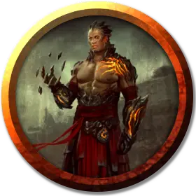

Мирадж Визанн
Miraj Vizann
Средний Гуманоид (Дженази земли), нейтрально-злой, именной НИП

Класс Доспеха 10 (13 с доспехами мага)
Хиты 82 (11к8 + 33)
Скорость 30 футов
| мод | спас | ||
|---|---|---|---|
| СИЛ | 12 | +1 | +1 |
| ЛОВ | 10 | +0 | +0 |
| ТЕЛ | 17 | +3 | +3 |
| мод | спас | ||
|---|---|---|---|
| ИНТ | 13 | +1 | +1 |
| МДР | 11 | +0 | +0 |
| ХАР | 18 | +4 | +4 |
Навыки Магия +4, Обман +7
Чувства пассивное Восприятие 10
Языки Общий, Первичный
Опасность 6 (2300 опыта)
Бонус мастерства +3
Особенности
Хождение по земле. Мирадж может перемещаться по труднопроходимой местности из земли или камня, не затрачивая дополнительное движение.
Врождённое колдовство. Базовой характеристикой Мираджа является Телосложение (Сл спасброска от заклинаний 14). Он может накладывать следующие заклинания, не нуждаясь в материальных компонентах:
1/день:. бесследное передвижение[pass without trace]
Использование заклинаний. Мирадж является заклинателем 11-го уровня. Его базовой характеристикой является Харизма (Сл спасброска от заклинаний 15, +7 к атакам заклинаниями). Он знает следующие заклинания чародея:
• Заговоры (неограниченно):брызги кислоты [acid splash], защита от оружия [blade ward], дружба [friends], свет [light], сообщение [message], лепка земли [mold earth]
• 1 уровень (4 ячейки):цветной шарик [chromatic orb], доспехи мага [mage armor], волшебная стрела [magic missile]
• 2 уровень (3 ячейки):земляная хватка Максимилиана[Maximilian’s earthen grasp], дребезги [shatter], внушение [suggestion]
• 3 уровень (3 ячейки):контрзаклинание[counterspell], извержение земли [erupting earth]
• 4 уровень (3 ячейка):превращение [polymorph], каменная кожа [stoneskin]
• 5 уровень (2 ячейка):каменная стена [wall of stone]
• 6 уровень (1 ячейка):движение почвы[move earth]
Действия
Посох. Рукопашная атака оружием: +4 к попаданию, досягаемость 5 фт., одна цель. Попадание: дробящий урон 4 (1к6 + 1) или дробящий урон 5 (1к8 + 1) при использовании оружия двумя руками.
Описание
Заслуживший славу перфекциониста дженази земли по имени Мирадж Визанн отвечает в культе за прокладку тоннелей. Он специализируется на магии и алхимических процессах, придающих камню ту или иную форму, а поскольку стихия воды тоже близка ему, он часто называет себя «магом грязи».
Хотя Мирадж по праву считается самым опытным заклинателем в культе Чёрной Земли, он не стремится сместить Марлоса Урнрейла с поста лидера культа. Он понимает, что медуза гораздо сильнее него, поэтому продолжает свои эксперименты, с радостью оставляя управление культом Марлосу.